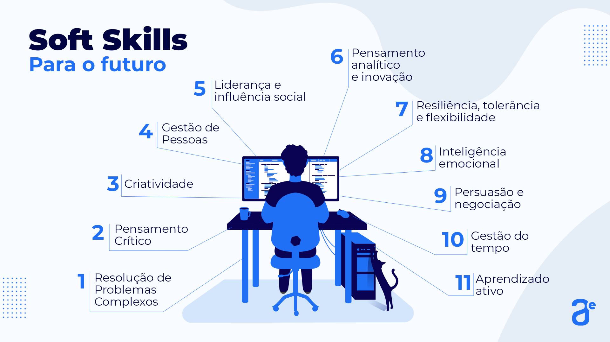

SOFT SKILLS
-
Soft skills são habilidades comportamentais relacionadas a maneira como
o profissional lida com o outro e consigo mesmo em diferentes situações.
As soft skills, diferentemente das hard skills, são habilidades
subjetivas, mais difíceis de serem mensuradas.
-
As soft skills servem para praticamente todas as funções em um negócio.
Afinal, a maioria dos empregos exige que os funcionários se envolvam uns
com os outros e tenham relações profissionais saudáveis.
-
Comunicação; Liderança; Proatividade; Trabalho em equipe; Resiliência.
-
Ao contrário de muitas outras, as habilidades comportamentais não podem
ser aprendidas na escola. Pelo menos não da maneira tradicional, nos
livros ou em uma aula específica. A experiência escolar pode desenvolver
soft skills a partir da premissa de proporcionar a convivência entre os
estudantes, pois elas incluem a capacidade de se comunicar, orientar
colegas, liderar, negociar, seguir instruções e concluir um trabalho no
prazo.
-
Passos para desenvolver inteligência emocional:
- Autoconhecimento para entender suas emoções.
- Autogestão para controlar reações impulsivas.
- Colaboração em equipe aumenta a produtividade.
- Liderança inspiradora motiva colegas a crescerem.